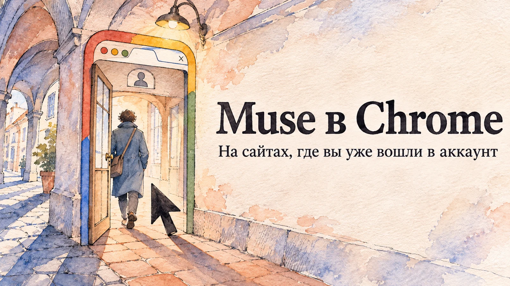

ХПИИ / Тема
ИИ-поиск и веб
Поисковые системы, ответы ИИ, браузеры и доступность информации в интернете.
1 материалов
← Все темыПубликации

21 ноября 2026 · Новости ИИMeta пустила ИИ в Chrome — под вашим логином
Meta выпустила расширение Muse для Chrome: агент действует в отдельной группе вкладок, используя открытые пользователем сессии. Ранее компания добавила поддержку Apple Watch и Wear OS.